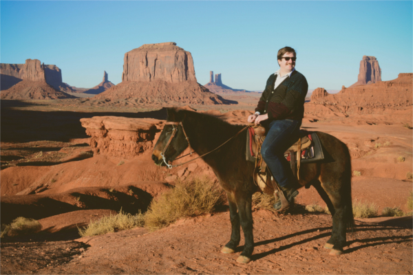

Soundcloud | Store | Twitter | About | Contact

|
|
Jacob Trombetta is a composer and multi-instrumentalist. After leaving his hometown, Mingo Junction, Ohio, he toured with Merge Record's Richard Buckner and Suicide Squeeze Record's The Six Parts Seven. In between tours he received an undergraduate degree in music and film and a masters degree in applied mathematics. Discrete Spectrum is the home of many of his projects. Currently he curates both a lecture series on modern music and a field-recording series. He has lectured in both mathematics and electro-acoustic music at universities, museums, library, bars and bowling alleys. His upcoming solo album, Waveguides, is a electro-pop revenge album planted firmly in the mythos of a dying mill town, much like the town he once called home. Mingo Junction, his hometown, was in fact the same dying mill town which appears in the 1978 film The Deer Hunter. Trombetta is part of other projects: a bossa-nova pop band Comfort Clouds, minimal-spectral band Ondelette, and impressionistic-krautrock band WATT. |
|